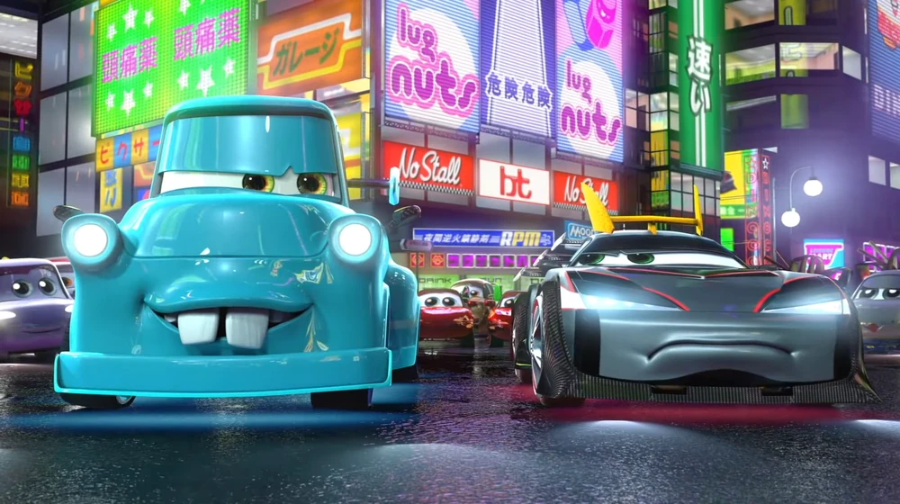
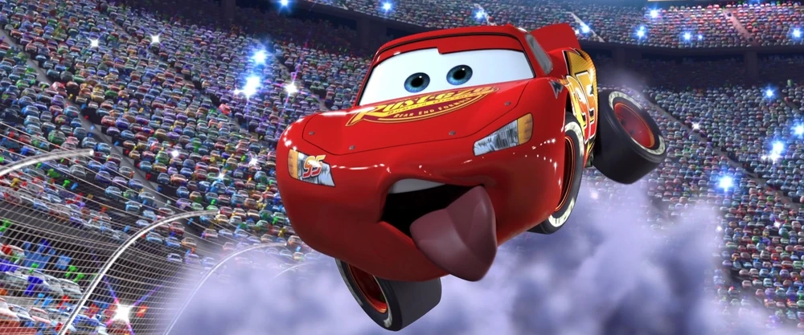
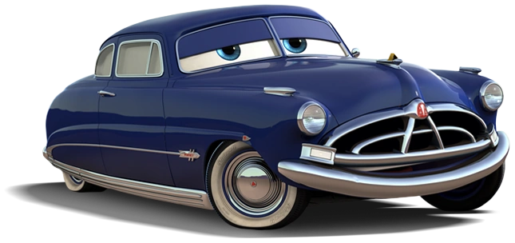

Złomek (Tow Mater)
Mistrz jazdy tyłem
Zardzewiały, ale o złotym sercu.Twierdzi, że dokonał wszystkiego, co tylko możliwe na czterech kołach.
„Jak bujam, to niech mi opona sparcieje!”
Witaj na złomowisku w Chłodnicy Górskiej przy Route 66. To tutaj najsłynniejszy holownik na świecie opowiada swoje najbardziej nieprawdopodobne przygody. Przy okazji możesz zaczerpnąć ekologicznego paliwa prosto od matki natury lub obejrzeć szybkie furki.

Mistrz jazdy tyłem
Zardzewiały, ale o złotym sercu.Twierdzi, że dokonał wszystkiego, co tylko możliwe na czterech kołach.

Mistrz Piston Cup
Genialny wyścigowiec o numerze 95.Pewny siebie,bystry,przebiegły i głodny wygranych

Mistrz po prostu
Trzykrotny zdobywca Złotego Tłoka (1951, 1952, 1953) i szanowany sędzia w miasteczku. To on nauczył Zygzaka jazdy w poślizgu na sypkim szutrze: „Skręć w prawo, aby jechać w lewo!”. Prawdziwa legenda wyścigów.
| Tytuł Bujdy | Rzekoma Rola Złomka | Niewiarygodny Wyczyn | Obecność Zygzaka |
|---|---|---|---|
| Złomek Strażak | Kapitan straży pożarnej | Uratował płonący wieżowiec i zaklinowane auta | Uwięziony na najwyższym piętrze |
| Złomek Śmiałek | Kaskader numer jeden | Skok nad Kanionem Karburatora w płonącym pierścieniu | Skakał bez kasku za namową tłumu |
| Złomek Matador | Pogromca buldożerów | Obezwładnienie stada szarżujących buldożerów czerwoną płachtą | Wjechał na arenę jako wściekły czerwony byk |
| Złomek w Tokio | Król japońskiego driftu | Wygrał wyścig ze szczytu Tokyo Tower jadąc tyłem | Modyfikacja w stylu Shibuya Neon |
| Złomek i UFO | Ambasador Ziemi | Zawody w piciu benzyny z latającym spodkiem Mówio | Uprowadzony przez promień traktora kosmitów |